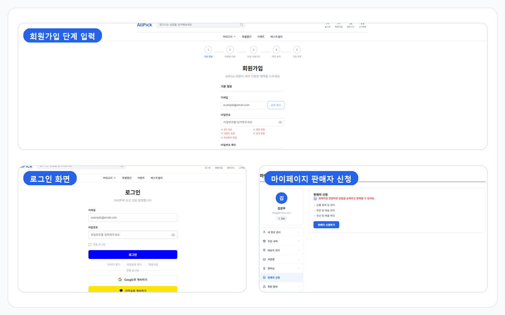
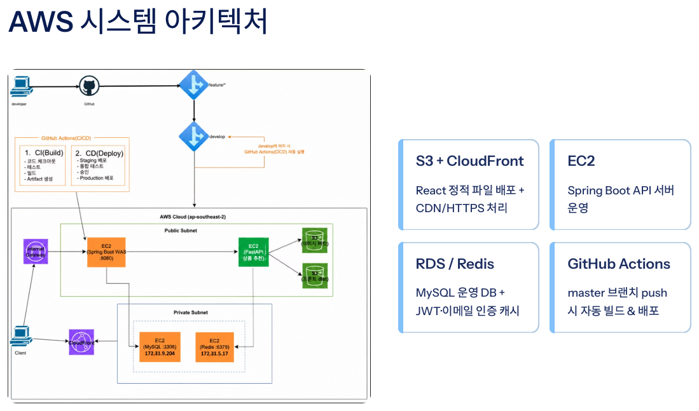
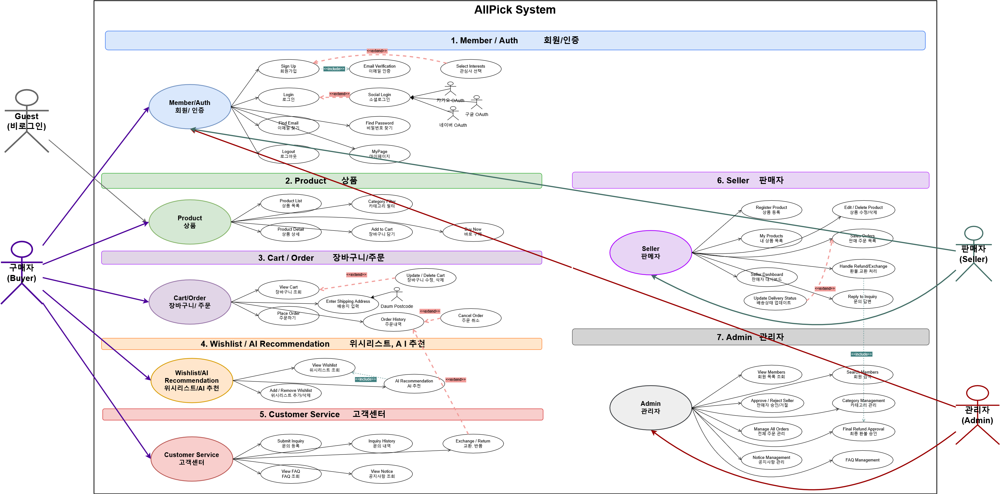
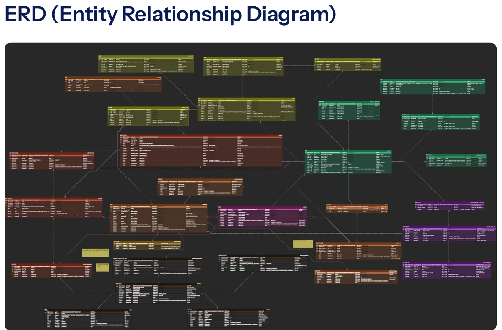
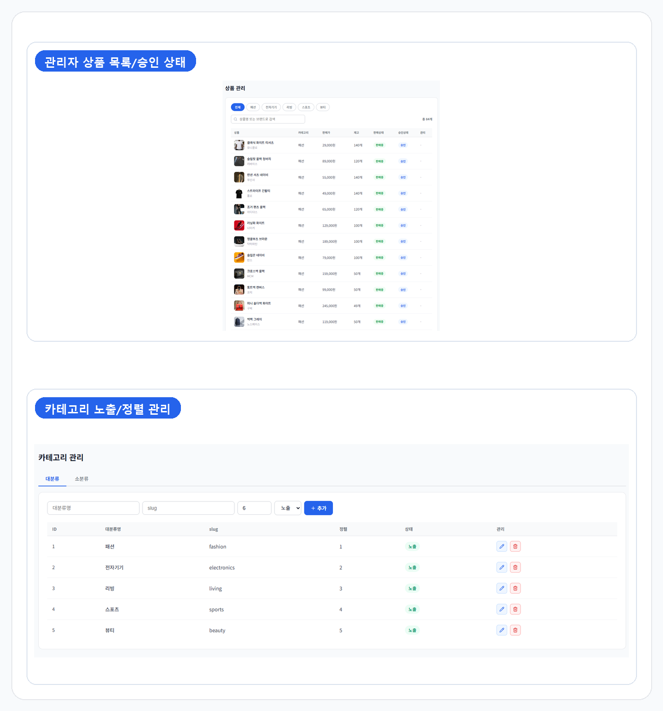
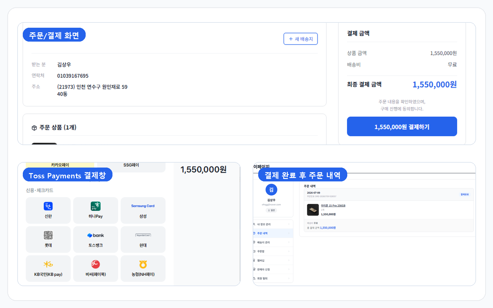
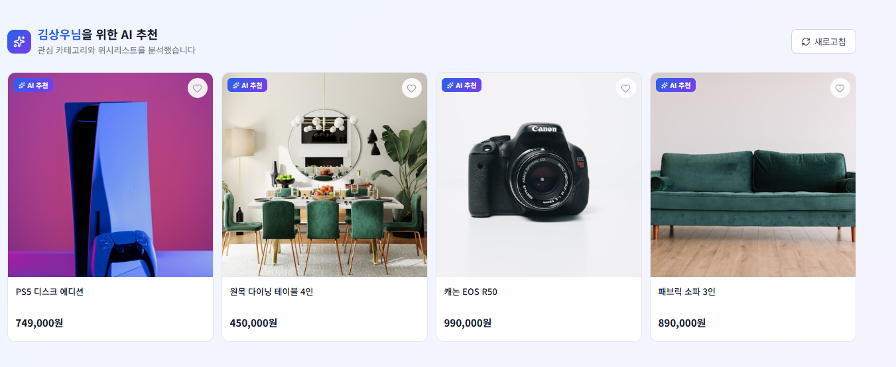
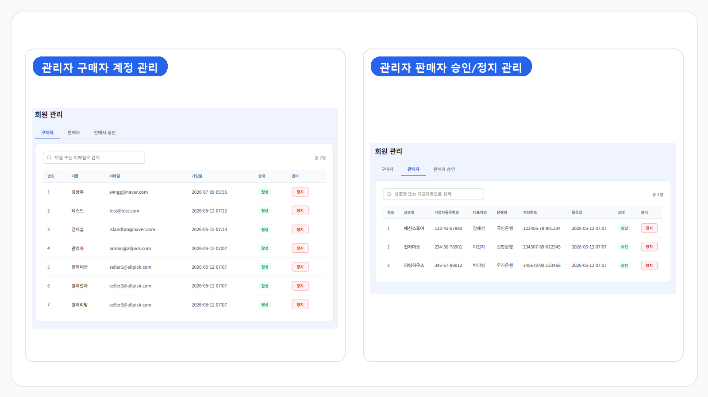
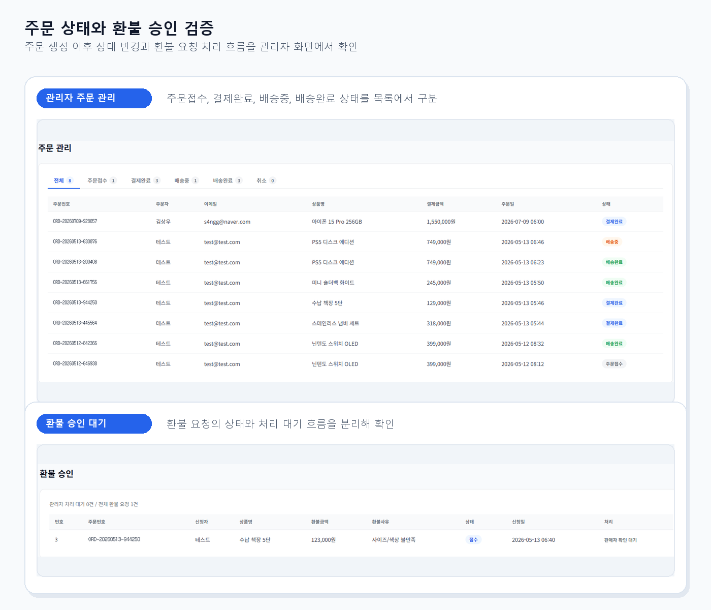
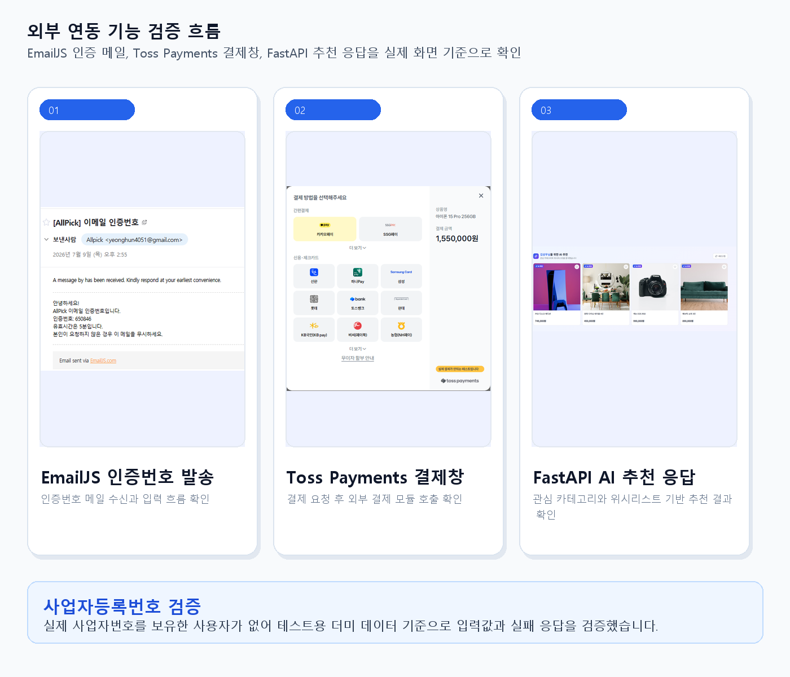

회원·판매자 인증과 역할 분리
일반 회원과 판매자, 관리자 계정을 분리하고 JWT 기반 인증으로 접근 가능한 API를 구분했습니다. 판매자 신청과 승인 상태에 따라 상품 등록 가능 여부가 달라지도록 흐름을 나눴습니다.
쇼핑몰 서비스
일반 회원, 판매자, 관리자가 함께 사용하는 B2C 쇼핑몰 프로젝트입니다. 상품 조회와 주문·결제, 장바구니, 쿠폰, 리뷰, 고객 문의, 판매자 승인, 관리자 기능을 Spring Boot API와 React 화면으로 연결하고 FastAPI 기반 AI 상품 추천까지 연동했습니다.
팀장으로 참여하며 JWT·Redis 기반 인증/보안 흐름, Toss Payments 결제 연동, 위시리스트 기반 AI 추천, AWS S3·CloudFront·EC2와 GitHub Actions 배포 흐름을 중심으로 구현과 검증을 맡았습니다.

Design Assets

React 정적 배포, Spring Boot API 서버, MySQL·Redis, S3 이미지 저장소, CloudFront 흐름을 정리합니다.

일반 회원, 판매자, 관리자 역할별 상품·주문·승인·CS 기능과 접근 범위를 구분합니다.

회원, 판매자, 상품, 주문, 쿠폰, 리뷰, 문의·클레임의 관계와 상태 전이를 정리합니다.
Features

일반 회원과 판매자, 관리자 계정을 분리하고 JWT 기반 인증으로 접근 가능한 API를 구분했습니다. 판매자 신청과 승인 상태에 따라 상품 등록 가능 여부가 달라지도록 흐름을 나눴습니다.

판매자가 상품을 등록하면 관리자가 승인 또는 반려할 수 있도록 상품 상태를 관리했습니다. 부모·자식 카테고리 구조를 기준으로 상품 목록과 상세 조회가 이어지도록 구성했습니다.

장바구니 담기부터 주문 생성, 배송지 관리, 결제 정보 조회까지 구매 흐름을 연결했습니다. React 화면에서는 API 응답과 사용자 상태를 기준으로 주문 단계를 분리했습니다.

FastAPI 서버에서 관심 카테고리와 위시리스트를 받아 OpenAI API 기반 추천 결과를 반환하도록 구성했습니다. 문의, 클레임, FAQ, 공지사항은 관리자와 사용자 흐름을 나눠 처리했습니다.
Architecture Notes
AllPick은 단순히 화면을 많이 만드는 것보다 회원, 판매자, 관리자 요청이 Spring Boot API와 React 화면 상태에서 같은 기준으로 동작하는지가 중요했습니다. 그래서 도메인 책임, 인증·예외 응답, 데이터 상태 전이, 배포 환경을 나눠 확인했습니다.
Spring Boot
회원, 상품, 주문, 쿠폰, 리뷰, CS, 관리자 기능을 도메인별로 나누고 Controller, Service, Repository 책임을 분리했습니다. 기능을 수정할 때 영향 범위를 좁히고, 역할별로 접근 가능한 API가 섞이지 않도록 확인했습니다.
Security & Error
Spring Security와 JWT를 기준으로 로그인 실패, 토큰 누락, 권한 부족, 존재하지 않는 리소스를 구분했습니다. BusinessException과 공통 응답 형식을 맞춰 React 화면에서도 같은 기준으로 실패 메시지를 처리할 수 있게 했습니다.
React
React 화면에서는 로그인 여부, 판매자 승인 상태, 주문 상태, 결제 결과에 따라 노출되는 버튼과 이동 경로가 달라집니다. Axios 요청 결과와 실패 응답을 기준으로 화면 상태를 갱신하고, 새로고침 이후에도 사용자가 같은 흐름을 이어갈 수 있는지 확인했습니다.
Data & Deploy
상품 승인, 주문 생성, 결제 완료, 배송, 환불처럼 상태가 바뀌는 기능은 요청 성공 이후 DB 조회 결과까지 확인했습니다. 프론트엔드는 S3·CloudFront, 백엔드는 EC2 기준으로 API 주소, Toss Payments, EmailJS, Redis 설정을 분리해 점검했습니다.
Verification
AllPick에서는 쇼핑몰 기능을 화면별로만 보지 않고 회원, 판매자, 관리자 흐름이 API와 DB 상태로 어떻게 이어지는지 확인했습니다. 인증, 주문, 승인, 추천, CS 기능을 구현 단위로 나누고 실패 조건과 응답 흐름을 함께 기록했습니다.
01 / Authentication
일반 회원 로그인, 판매자 로그인, 관리자 로그인 흐름을 나누고 요청 경로에 따라 필요한 토큰과 권한이 다르게 적용되도록 확인했습니다.

02 / Permission
판매자 승인, 상품 승인, 주문 생성, 클레임 처리처럼 상태가 바뀌는 기능은 요청 성공 이후 실제 DB 상태와 후속 조회 결과가 일치하는지 확인했습니다.

03 / AI & Integration
Toss Payments, EmailJS, 사업자등록번호 검증, FastAPI 추천 서버처럼 외부 연동이 필요한 기능은 입력값과 요청 흐름, 실패 응답을 나누어 확인했습니다. 사업자등록번호 검증은 실제 번호를 보유한 사용자가 없어 테스트용 더미 데이터 기준으로 검증했습니다.
